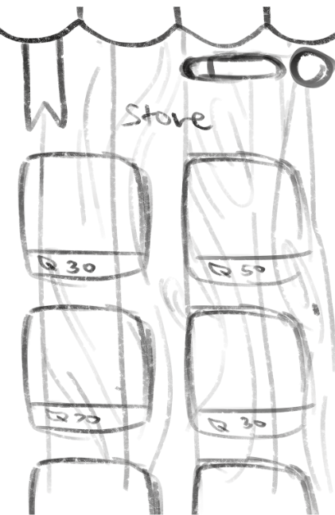

Project Outline
I was tasked with creating a kid's game concept, so I decided to take inspiration from my own
favourite childhood games. I used to really enjoy those scientific apps, where you assist local scientists
by taking picture of local fauna and flora, however I remember that the UI was fairly boring, atleast for the one I used
and outside of a point system there was a lack of motivation, particularly for children. Another app that I enjoyed was
Pokemon Go, I think it excelled in the aspects I previously mentioned, capturing little Pokemon while walking around
was one of my favourite things to do, I also belive that discovering and trading new Pokemon encouraged children
to excersice more. I wanted to combine these two game's to create a new concept that children of Australia can enjoy.
My Process
The Sketching Phase
My intent was for users to take pictures of local flora, and after a certain goal was reached, such as taking pictures of the same plant in different places
five different times, they could discover the fairy inspired by that plant. Now that I had a clear vision, I moved on to brainstorming ideas,
I decided to focus on the natural flora of Australia. To design these I was heavily inspired by Pokemon's creature designs and wanted to create similar concepts.
So I chose a few native plants and started
sketching out my ideas.
Finalising Ideas
I chose only a few concepts to finalise, and then I went on to fully line and colour them. I was left with four designs,
my favourite of these was by far the Daisy fae, so I decided to make them the mascot of the game. I thought that the audience
would also have an easier time recognising the design, as daisys are one of the most common and iconic wildflowers.
Moving onto the game art
Now that I have created the designs for my characters, I needed to make the UI match their designs.
I decided on a more "rustic" approach rather than the futuristic one that Pokemon has gone for, I wanted users to feel like they
were the ones exploring, as if they were documenting these creatures like an older scientist might. So I decided on UI that looked almost
scrap-booked together. I made various sketches on each of these layouts, and finalised them with hand-drawn lineart and a warm colour pallete.
Other Menu's
I also needed to include a way for users to take pictures of plant's, while I did consider using the normal photo app
I thought creating my own UI could be more immersive. I also wanted players to earn points, however I didn't have a reason for them to use them,
or a place for them to spend them yet. So I decided to create a shop where players can buy various item's for their littl plant fairies. There also neede to be
a place where they could give their fairies these items, so I created a "room" for users to decorate for their individual plant's.

Additional UI
The final thing I added was a loading screen, I wanted the image to be simple yet align with the game concepts.
I brainstormed various ideas, but ended up settling on the one that featured the dairy fairy.
I made the additional UI/loading bar match the camera.